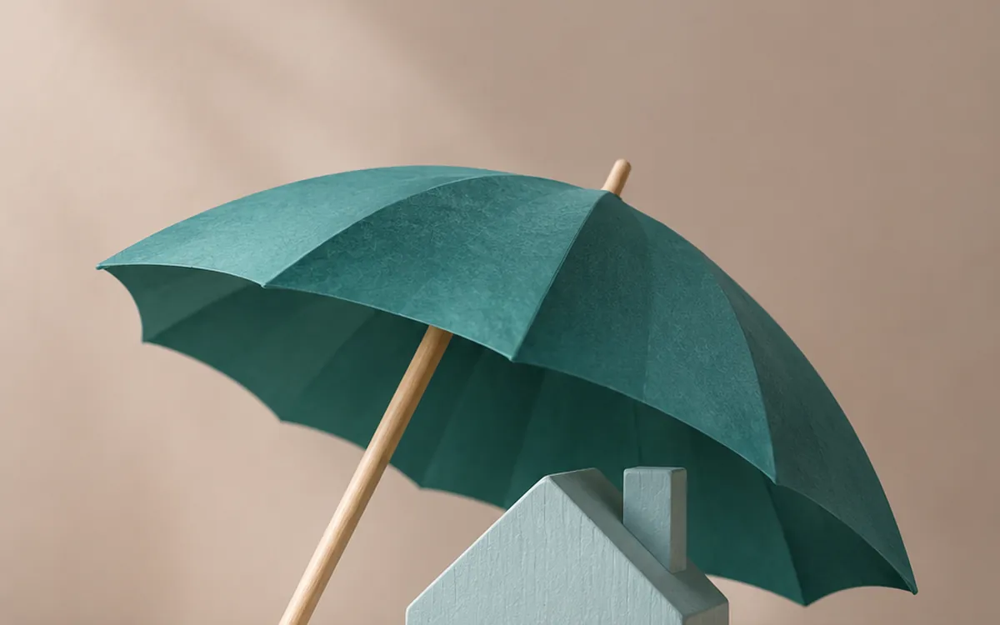
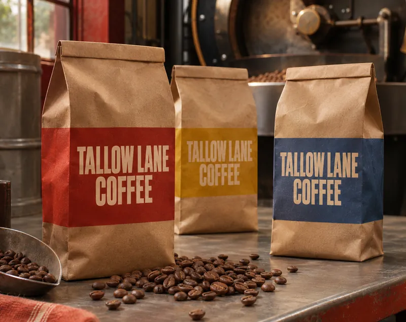
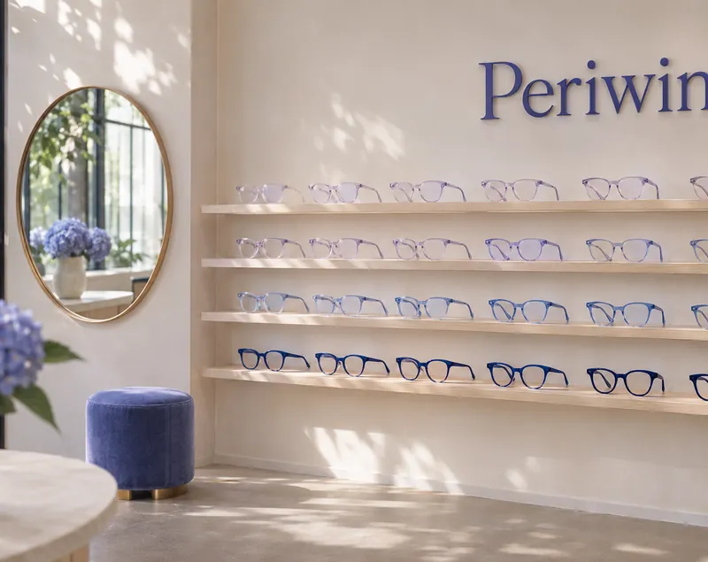
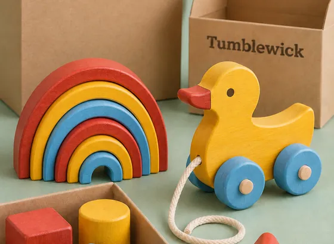
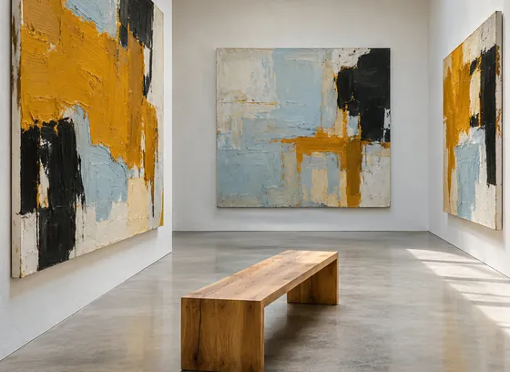
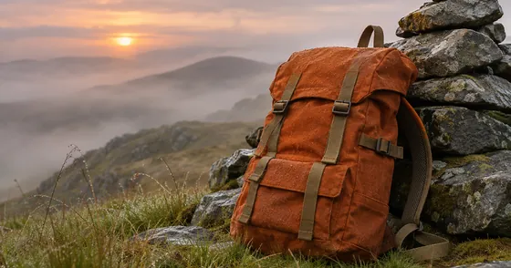
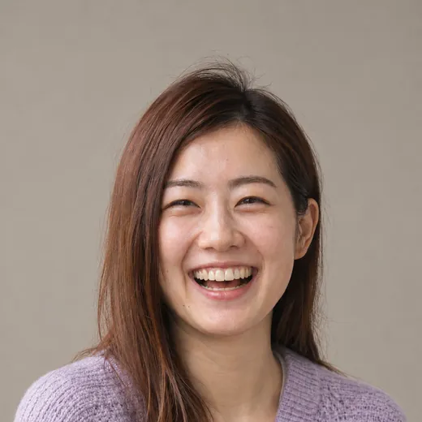
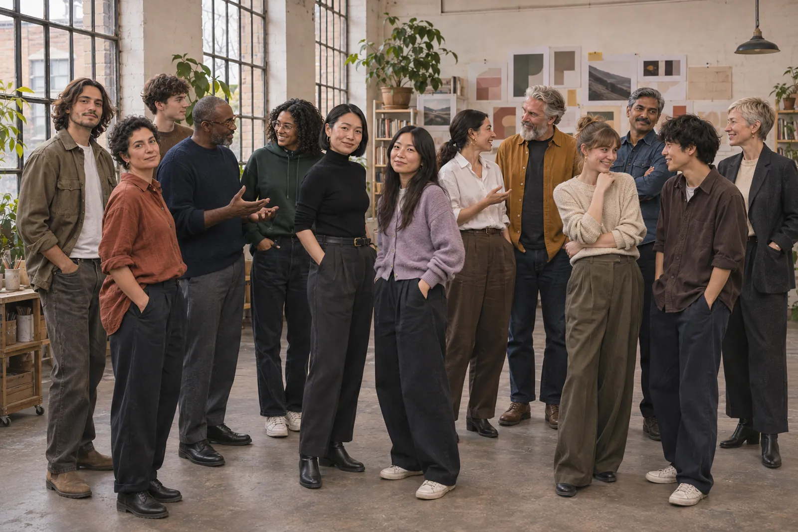

Est. 2014 · Studio in Lowmere
Brands
with a
pulse.


Book a 30 minute call
with a strategist, not a salesperson
What Mosswick does
We build brands   
Brands worth remembering.
Marketing that pays back, measured honestly.
Mosswick is a creative and marketing studio in Lowmere, founded in 2014. Thirty-two strategists, designers, writers, filmmakers and media buyers work in one studio, making brands that look good and marketing that earns its keep. We take on a handful of new clients each season and give each one a senior team from day one.
Disciplines
- Brand Identity
- Performance Marketing
- Film & Motion
- Social Content
Results
Figures from client reports
The people who lead Mosswick
Ines Calloway
Founder and Creative Director
Tobias Okonjo-Hale
Co-founder and Strategy Director
Mei Lin Draper
Design Director
Dario Vellacott
Film Director

Hana Moriyama
Head of Social
“Every brand needs one idea it can say in a single breath. If nobody remembers your ad, it might as well not have run.”

Questions clients ask us
How much does a project cost?
Brand identities usually start around $18,000, websites around $15,000 and retainers around $5,000 a month. We send a fixed quote after our first call.
How long does a brand identity take?
Most identity projects take eight to twelve weeks from the first workshop to final files. A full rebrand with a website usually runs four to six months.
Who will actually work on my project?
The people you meet in the first meeting: a senior lead, a strategist and the makers the job needs. We never hand the work to a different team after signing.
Ask us anything else on a call
Creative and Marketing Studio
Lowmere · Est. 2014
Book a 30 minute call
With a strategist, not a salesperson. Or write to hello@example.com